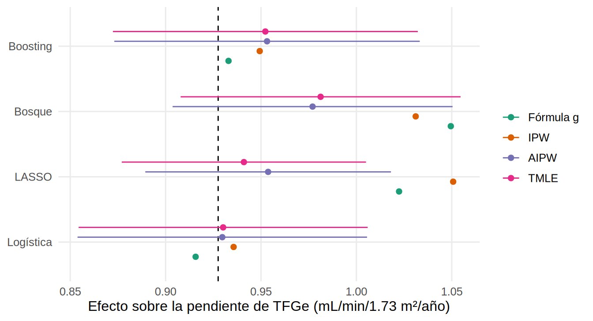

library(tidyverse)
source("R/funciones_epi.R") # smd()
source("R/funciones_extra_a.R") # num(), pct()
source("R/funciones_extra_cap1213.R") # ess()
source("R/funciones_cap1211.R") # aprendices, cross-fitting, TMLE, super learner
theme_set(theme_minimal(base_size = 12) + theme(panel.grid.minor = element_blank()))
oraculo <- read_csv("Bases/ckd_isglt2_oraculo.csv", show_col_types = FALSE) |>
mutate(sexo = factor(sexo), luacr = log(uacr), hombre = as.numeric(sexo == "Hombre"))
verdad <- mean(oraculo$ite) # efecto verdadero (ATE) sobre la pendiente de TFGe
covs <- c("edad", "sexo", "hba1c", "pas", "tfg_basal", "luacr", "ecv", "fragilidad")
x <- matriz_cov(oraculo, covs) # matriz numérica de covariables
a <- oraculo$isglt2 # tratamiento
y <- oraculo$pendiente_tfg # desenlaceAprendizaje automático y TMLE: modelos flexibles sin perder la inferencia
Nota🩺 Escenario
Tu colega bioestadístico te dice: “tu puntaje de propensión es una regresión logística con efectos lineales; ¿y si la relación entre la edad, la albuminuria y recibir iSGLT2 es una curva? Prueba con un bosque aleatorio”. Es tentador: los algoritmos de aprendizaje automático (machine learning, ML) encuentran curvas e interacciones solos. Pero si los metes en el análisis causal sin cuidado, el resultado puede empeorar. Este subcapítulo te muestra cuándo ayudan, cómo usarlos sin trampa (cross-fitting) y cómo obtener un intervalo de confianza válido con el TMLE.
Lo que vamos a hacer
- Usar LASSO, bosque aleatorio y boosting para estimar el puntaje de propensión (PS) y ver qué les pasa a los pesos y al balance.
- Entender el cross-fitting y por qué evita el sobreajuste.
- Construir un TMLE paso a paso, a mano, y compararlo con la fórmula g y el AIPW del Capítulo 12.6.
- Armar un mini super learner (combina varios modelos con pesos elegidos por validación cruzada).
- Ver un caso donde el ML sí ayuda y otro donde no puede ayudar (confusión no medida).
Las funciones reutilizables están en R/funciones_cap1211.R; abre ese archivo si quieres ver cómo funciona cada pieza. Todos los datos son simulados y conocemos la verdad.
Como en 3.2 y 12.6, el efecto verdadero es 0.93 mL/min/1.73 m²/año y tenemos medidos todos los confusores (incluida la fragilidad).
Paso 1. Un PS con aprendizaje automático: ¿mejora?
Cuatro maneras de estimar la probabilidad de recibir iSGLT2: regresión logística (la de siempre), LASSO (logística penalizada, con cuadrados e interacciones), bosque aleatorio y boosting (muchos árboles pequeños en secuencia). Cada una nos da un PS; resumimos sus pesos, el balance que logran y el efecto IPW.
ps <- list(
`Logística` = aprendiz_glm(x, a)(x),
`LASSO` = aprendiz_lasso(x, a)(x),
`Bosque` = aprendiz_bosque(x, a)(x),
`Boosting` = aprendiz_boosting(x, a)(x)
)
vars_bal <- c("edad", "hombre", "hba1c", "pas", "tfg_basal", "luacr", "ecv", "fragilidad")
tab_ps <- imap(ps, \(p, nombre) resumen_ps(p, nombre, oraculo, vars_bal, verdad = verdad)) |> bind_rows()
tab_ps |> mutate(across(where(is.numeric), \(v) round(v, 2)))# A tibble: 4 × 9
PS minimo maximo extremos_pct peso_max ESS dem_max efecto_ipw sesgo
<chr> <dbl> <dbl> <dbl> <dbl> <dbl> <dbl> <dbl> <dbl>
1 Logística 0.01 0.99 2.84 27.4 3128. 0.02 0.94 0.01
2 LASSO 0.03 0.99 0.5 16.8 3882. 0.16 1.03 0.11
3 Bosque 0.02 0.98 1.02 4.55 4688. 0.46 1.27 0.34
4 Boosting 0.02 0.98 1.56 20.4 3486. 0.1 1.01 0.08Qué vemos: la logística (la correcta para este mundo simulado) equilibra casi perfectamente (|DEM| máxima 0.02) y su IPW da 0.94. El bosque reparte probabilidades más “suaves”, con pesos pequeños (máximo 4.5), pero no logra equilibrar (|DEM| máxima 0.46) y el efecto sale 1.27, un sesgo de 0.34. Los pesos pequeños no son buena señal aquí: una explicación probable es que el bosque, con sus probabilidades suavizadas, subestima cuánto depende el tratamiento de las covariables.
Advertencia⚠️ Un PS “mejor” para predecir no es mejor para ajustar
Un modelo se juzga como predictor (¿acierta quién recibe el fármaco?) o como herramienta de ajuste (¿equilibra los confusores?). Son objetivos distintos. En inferencia causal manda el balance y el efecto estimado frente a lo que sabes de la verdad, no el AUC del PS. Con ML, mira siempre el balance (|DEM|), los pesos y el tamaño efectivo (ESS).
Paso 2. Cross-fitting: no te evalúes con el examen que estudiaste
Si ajustas el bosque con los mismos pacientes en los que luego predices, el modelo ya vio a cada paciente: sus predicciones son demasiado buenas para esos pacientes y el análisis arrastra ese sobreajuste. El cross-fitting (ajuste cruzado) lo evita: dividimos a los pacientes en \(K\) pliegues; para cada uno, ajustamos el modelo con los otros \(K-1\) y predecimos en él. Así cada predicción viene de un modelo que no vio a ese paciente.
Comparamos los estimadores sin cross-fitting (K = 1) y con él (K = 5) usando el bosque aleatorio:
resumen_cf <- bind_rows(
analizar(y, a, x, aprendiz_bosque, K = 1) |> mutate(cross_fitting = "No (K = 1)"),
analizar(y, a, x, aprendiz_bosque, K = 5) |> mutate(cross_fitting = "Sí (K = 5)")
) |> mutate(verdad = verdad, sesgo = estimado - verdad)
resumen_cf |> select(cross_fitting, metodo, estimado, ee, sesgo) |> mutate(across(where(is.numeric), \(v) round(v, 3)))# A tibble: 8 × 5
cross_fitting metodo estimado ee sesgo
<chr> <chr> <dbl> <dbl> <dbl>
1 No (K = 1) Fórmula g 1.05 NA 0.124
2 No (K = 1) IPW 1.27 NA 0.34
3 No (K = 1) AIPW 1.03 0.022 0.1
4 No (K = 1) TMLE 0.983 0.022 0.055
5 Sí (K = 5) Fórmula g 1.05 NA 0.122
6 Sí (K = 5) IPW 1.03 NA 0.104
7 Sí (K = 5) AIPW 0.977 0.037 0.049
8 Sí (K = 5) TMLE 0.981 0.037 0.054Qué vemos: sin cross-fitting, el IPW con bosque da 1.27 y su error estándar del AIPW es 0.022, más pequeño que el de la versión con cross-fitting (0.037). Ese error estándar menor es optimismo: sin cross-fitting los intervalos son demasiado estrechos. Con \(K = 5\), el IPW (1.03) y los doblemente robustos (AIPW 0.98; TMLE 0.98) se acercan a la verdad (0.93).
Paso 3. TMLE paso a paso, a mano
El TMLE (targeted maximum likelihood estimation, estimación de máxima verosimilitud dirigida) es un estimador doblemente robusto, como el AIPW (Capítulo 12.6), con una ventaja: parte de la estimación de la fórmula g y la corrige con una pequeña actualización “dirigida” hacia el efecto, de modo que las estimaciones siempre queden dentro de los valores posibles. Lo hacemos primero con regresiones comunes para ver cada pieza; el ML entrará después.
n <- length(y)
y_min <- min(y); y_max <- max(y)
# Paso 1. Reescalar el desenlace a [0, 1] (el TMLE trabaja con probabilidades)
ys <- (y - y_min) / (y_max - y_min)
# Paso 2. Estimación inicial del desenlace: modelo con tratamiento y covariables
mq <- glm(ys ~ ., data = data.frame(ys, a, x), family = quasibinomial())
Q1 <- predict(mq, data.frame(a = 1, x), type = "response") # esperado si TODOS reciben iSGLT2
Q0 <- predict(mq, data.frame(a = 0, x), type = "response") # esperado si NADIE lo recibe
QA <- ifelse(a == 1, Q1, Q0) # esperado según lo que recibió cada uno
inicial <- (y_max - y_min) * mean(Q1 - Q0) # estimación de la fórmula g (sin corregir)
# Paso 3. Puntaje de propensión
g <- fitted(glm(a ~ ., data = data.frame(a, x), family = binomial()))
# Paso 4. Covariable "clever": pondera por la inversa de la probabilidad de lo recibido
H <- a / g - (1 - a) / (1 - g)
# Paso 5. Parámetro de fluctuación epsilon: cuánto hay que corregir Q
eps <- unname(coef(glm(ys ~ -1 + H + offset(qlogis(QA)), family = quasibinomial()))["H"])
# Paso 6. Actualizar las predicciones
Q1s <- plogis(qlogis(Q1) + eps / g)
Q0s <- plogis(qlogis(Q0) - eps / (1 - g))
# Paso 7. Efecto en la escala [0, 1] y Paso 8. volver a la escala original
psi <- mean(Q1s - Q0s)
tmle_ate <- (y_max - y_min) * psi
# Paso 9. Error estándar con la curva de influencia
D <- H * (ys - ifelse(a == 1, Q1s, Q0s)) + Q1s - Q0s - psi
ee <- (y_max - y_min) * sd(D) / sqrt(n)
tibble(estimacion = c("Fórmula g inicial", "TMLE"),
estimado = c(inicial, tmle_ate),
ic_inf = c(NA, tmle_ate - 1.96 * ee),
ic_sup = c(NA, tmle_ate + 1.96 * ee),
verdad = verdad) |>
mutate(across(where(is.numeric), \(v) round(v, 3)))# A tibble: 2 × 5
estimacion estimado ic_inf ic_sup verdad
<chr> <dbl> <dbl> <dbl> <dbl>
1 Fórmula g inicial 0.929 NA NA 0.928
2 TMLE 0.925 0.85 1.00 0.928Qué vemos: el \(\varepsilon\) estimado es -0.0002, muy cercano a cero: el modelo inicial ya estaba casi bien y la corrección es mínima. El TMLE (0.93) cae sobre la verdad (0.93) con un IC 95 % de 0.85 a 1.00. Si el modelo inicial hubiera estado mal, \(\varepsilon\) sería mayor y la corrección, mayor. La función analizar() del libro hace estos mismos pasos para cualquier aprendiz; con regresión logística da 0.93 para el TMLE (la pequeña diferencia es que allí el modelo del desenlace se ajusta por separado en cada brazo).
Paso 4. Los mismos estimadores con distintos aprendices
Ahora aplicamos la fórmula g, el IPW, el AIPW y el TMLE con cada aprendiz, siempre con cross-fitting (\(K = 5\)). Los dos primeros no entregan error estándar propio (se obtiene con bootstrap); los doblemente robustos sí, a partir de la curva de influencia.
aprendices <- list(`Logística` = aprendiz_glm, `LASSO` = aprendiz_lasso,
`Bosque` = aprendiz_bosque, `Boosting` = aprendiz_boosting)
res_apr <- imap(aprendices, \(ap, nombre) analizar(y, a, x, ap, K = 5) |> mutate(aprendiz = nombre)) |>
bind_rows() |> mutate(sesgo = estimado - verdad)
res_apr |> select(aprendiz, metodo, estimado, ee, sesgo) |>
mutate(across(where(is.numeric), \(v) round(v, 3)))# A tibble: 16 × 5
aprendiz metodo estimado ee sesgo
<chr> <chr> <dbl> <dbl> <dbl>
1 Logística Fórmula g 0.916 NA -0.012
2 Logística IPW 0.936 NA 0.008
3 Logística AIPW 0.93 0.039 0.002
4 Logística TMLE 0.93 0.039 0.003
5 LASSO Fórmula g 1.02 NA 0.095
6 LASSO IPW 1.05 NA 0.123
7 LASSO AIPW 0.954 0.033 0.026
8 LASSO TMLE 0.941 0.033 0.013
9 Bosque Fórmula g 1.05 NA 0.122
10 Bosque IPW 1.03 NA 0.104
11 Bosque AIPW 0.977 0.037 0.049
12 Bosque TMLE 0.981 0.037 0.054
13 Boosting Fórmula g 0.933 NA 0.005
14 Boosting IPW 0.949 NA 0.022
15 Boosting AIPW 0.953 0.041 0.026
16 Boosting TMLE 0.952 0.041 0.025res_apr |>
mutate(aprendiz = fct_inorder(aprendiz), metodo = fct_inorder(metodo)) |>
ggplot(aes(estimado, aprendiz, color = metodo)) +
geom_vline(xintercept = verdad, linetype = "dashed") +
geom_pointrange(aes(xmin = ic_inf, xmax = ic_sup), position = position_dodge(width = 0.6), size = 0.3) +
scale_color_brewer(palette = "Dark2", name = NULL) +
labs(x = "Efecto sobre la pendiente de TFGe (mL/min/1.73 m²/año)", y = NULL)
Qué vemos: con la logística, que es el modelo correcto, todos aciertan. Con los demás aprendices, la fórmula g y el IPW dependen mucho del aprendiz (con LASSO, por ejemplo, la fórmula g da 1.02), mientras que el TMLE y el AIPW se mantienen más cerca de la verdad (0.93 a 0.98 entre aprendices). Esa es la doble robustez en acción: un modelo algo sesgado se corrige con el otro.
Paso 5. Un mini super learner
¿Y si no sabes qué aprendiz elegir? El super learner (van der Laan y colaboradores, 2007) no elige: combina. Ajusta varios modelos candidatos, calcula sus predicciones por validación cruzada y busca los pesos no negativos que minimizan el error de predicción de la mezcla. Nuestra versión (super_aprendiz()) combina la logística, el LASSO, un árbol, el bosque y el boosting:
sl <- super_aprendiz(list(`Logística` = aprendiz_glm, `LASSO` = aprendiz_lasso, `Árbol` = aprendiz_arbol,
`Bosque` = aprendiz_bosque, `Boosting` = aprendiz_boosting))
ajuste_sl <- sl(x, (y - y_min) / (y_max - y_min)) # pesos para predecir el desenlace
tibble(candidato = names(attr(ajuste_sl, "pesos")),
peso = round(attr(ajuste_sl, "pesos"), 3),
error_cv = round(attr(ajuste_sl, "error_cv"), 4))# A tibble: 5 × 3
candidato peso error_cv
<chr> <dbl> <dbl>
1 Logística 0.343 0.0091
2 LASSO 0.263 0.0091
3 Árbol 0 0.0115
4 Bosque 0.05 0.0094
5 Boosting 0.343 0.0092Los pesos dicen quién aportó: los mayores son de Logística, LASSO, Boosting, y el árbol simple queda en 0.00. Como el mundo simulado es casi lineal, el árbol no aporta nada. Usamos el super learner como aprendiz en el TMLE:
res_sl <- analizar(y, a, x, sl, K = 5)
res_sl |> mutate(sesgo = estimado - verdad, across(where(is.numeric), \(v) round(v, 3)))# A tibble: 4 × 6
metodo estimado ee ic_inf ic_sup sesgo
<chr> <dbl> <dbl> <dbl> <dbl> <dbl>
1 Fórmula g 0.93 NA NA NA 0.003
2 IPW 0.952 NA NA NA 0.024
3 AIPW 0.929 0.037 0.855 1.00 0.001
4 TMLE 0.929 0.037 0.855 1.00 0.001El TMLE con super learner da 0.93 (IC 0.86 a 1.00) frente a la verdad de 0.93. La ventaja del super learner no es ganar siempre, sino protegerte de elegir mal.
Paso 6. Un caso donde el ML sí ayuda: relaciones no lineales
En el mundo anterior, una regresión logística bastaba. Simulamos ahora otro (simular_no_lineal()) donde el tratamiento y el desenlace dependen de las covariables mediante curvas e interacciones (por ejemplo, la edad entra al cuadrado y la TFGe interactúa con la albuminuria). Conocemos la verdad.
sim <- simular_no_lineal()
d_nl <- sim$datos
x_nl <- as.matrix(d_nl[, c("edad", "tfg", "luacr", "hba1c", "ecv")])
crudo_nl <- mean(d_nl$y[d_nl$a == 1]) - mean(d_nl$y[d_nl$a == 0])
res_nl_apr <- imap(aprendices, \(ap, nombre) analizar(d_nl$y, d_nl$a, x_nl, ap, K = 5) |> mutate(aprendiz = nombre)) |>
bind_rows()
res_nl_sl <- analizar(d_nl$y, d_nl$a, x_nl, sl, K = 5) |> mutate(aprendiz = "Super learner")
res_nl <- bind_rows(res_nl_apr, res_nl_sl) |> mutate(sesgo = estimado - sim$verdad)
res_nl |> filter(metodo == "TMLE") |> select(aprendiz, estimado, ic_inf, ic_sup, sesgo) |>
mutate(across(where(is.numeric), \(v) round(v, 3)))# A tibble: 5 × 5
aprendiz estimado ic_inf ic_sup sesgo
<chr> <dbl> <dbl> <dbl> <dbl>
1 Logística 1.41 1.27 1.54 0.252
2 LASSO 1.23 1.15 1.32 0.079
3 Bosque 1.26 1.15 1.38 0.108
4 Boosting 1.23 1.12 1.34 0.076
5 Super learner 1.23 1.14 1.31 0.071Qué vemos: el efecto verdadero es 1.16 y la comparación cruda da 1.37. Con la regresión logística, el TMLE da 1.41 (sesgo 0.25; incluso peor que la comparación cruda), con un IC que no contiene la verdad: los dos modelos estaban mal especificados y la doble robustez no tiene en qué apoyarse. Con LASSO (1.23), bosque (1.26), boosting (1.23) y super learner (1.23) el sesgo baja de forma clara. Aquí el ML justifica su costo.
Paso 7. Lo que el ML no puede arreglar: la confusión no medida
Volvemos al registro de iSGLT2 y quitamos la fragilidad de las covariables, como en el Capítulo 3.4:
x_sf <- matriz_cov(oraculo, setdiff(covs, "fragilidad"))
sin_frag <- bind_rows(
analizar(y, a, x_sf, aprendiz_glm, K = 5) |> mutate(aprendiz = "Logística"),
analizar(y, a, x_sf, aprendiz_bosque, K = 5) |> mutate(aprendiz = "Bosque"),
analizar(y, a, x_sf, sl, K = 5) |> mutate(aprendiz = "Super learner")
) |> filter(metodo == "TMLE") |> mutate(sesgo = estimado - verdad)
sin_frag |> select(aprendiz, estimado, ic_inf, ic_sup, sesgo) |> mutate(across(where(is.numeric), \(v) round(v, 3)))# A tibble: 3 × 5
aprendiz estimado ic_inf ic_sup sesgo
<chr> <dbl> <dbl> <dbl> <dbl>
1 Logística 1.35 1.27 1.42 0.418
2 Bosque 1.35 1.28 1.43 0.426
3 Super learner 1.34 1.27 1.42 0.415El TMLE con cualquier aprendiz queda en 1.34 a 1.35, lejos de 0.93, y los IC no contienen la verdad: son estrechos y equivocados. Ningún algoritmo, por flexible que sea, puede recuperar una variable que no está en los datos.
Con los paquetes del mundo real (no se ejecutan aquí)
Para tu trabajo diario usa paquetes revisados, no nuestras funciones didácticas. Estas llamadas (código no verificado en el entorno de pruebas del libro) hacen lo de los pasos anteriores:
library(SuperLearner); library(tmle)
sl_lib <- c("SL.glm", "SL.glmnet", "SL.ranger", "SL.gbm") # biblioteca de candidatos
res_tmle <- tmle(Y = y, A = a, W = as.data.frame(x),
Q.SL.library = sl_lib, g.SL.library = sl_lib, family = "gaussian")
summary(res_tmle) # ATE con IC 95 %library(AIPW)
aipw <- AIPW$new(Y = y, A = a, W = as.data.frame(x),
Q.SL.library = c("SL.glm", "SL.ranger"), g.SL.library = c("SL.glm", "SL.ranger"),
k_split = 5, verbose = FALSE)$fit()$summary()
aipw$result # estimaciones con ICPara tratamientos que cambian en el tiempo (Capítulo 19), el paquete lmtp (con sl3 o SuperLearner) extiende esta idea; la emulación de ensayo con corticoides de Hoffman y colaboradores (2022) es un ejemplo.
Cuándo sí y cuándo no usar ML
| Método | Modelo supuesto | Ventaja | Riesgo |
|---|---|---|---|
| Regresión (IPW o fórmula g) | Lineal y aditivo | Simple, transparente | Sesgo si hay curvas o interacciones |
| ML sin cross-fitting | Flexible | Capta curvas | Sobreajuste: IC demasiado estrechos |
| ML con cross-fitting + AIPW/TMLE | Flexible | IC válidos y doble robustez | Más código y tiempo de cómputo |
| Super learner | Mezcla de varios | Protege de elegir mal | Coste computacional; no arregla confusión no medida |
Úsalo cuando hay razones para sospechar relaciones no lineales o interacciones y tienes una muestra razonable (cientos a miles de pacientes); no esperes que mejore una regresión que ya está bien especificada (Pasos 1 a 5) ni que corrija la confusión no medida (Paso 7).
Importante🎯 En resumen
- Un PS de ML se juzga por el balance, no por cuán bien predice: el bosque aleatorio aislado desequilibró (|DEM| 0.46) y sesgó el IPW.
- El cross-fitting evita el sobreajuste: sin él, los errores estándar quedan demasiado pequeños.
- El TMLE y el AIPW son doblemente robustos y dan un IC a partir de la curva de influencia; el TMLE además mantiene las estimaciones en el rango posible.
- El super learner combina candidatos con pesos de validación cruzada; protege de elegir mal el modelo.
- Con relaciones no lineales, el ML reduce claramente el sesgo (Paso 6). Con confusión no medida, no ayuda en absoluto (Paso 7).
Ejercicio
- Cambia el número de pliegues de
K = 5aK = 10en el Paso 4. ¿Cambian las estimaciones del TMLE con bosque? ¿Y el tiempo de cómputo? - En el Paso 6, amplía la biblioteca del super learner sumando el
aprendiz_lasso(ampliar = FALSE). ¿Cambian los pesos? ¿Y el efecto? - Aplica
analizar()conaprendiz_glmal desenlace binarioevento_36m(usaoraculo$evento_36m_1 * a + oraculo$evento_36m_0 * (1 - a)como desenlace observado). Compara el efecto con la diferencia de riesgos verdadera a 36 meses (mean(oraculo$evento_36m_1 - oraculo$evento_36m_0)).
Referencias
- Karim ME. Targeted Maximum Likelihood Estimation workshop. https://ehsanx.github.io/TMLEworkshop/
- Karim ME. Advanced Epidemiological Methods (EpiMethods), capítulos de aprendizaje automático causal. https://ehsanx.github.io/EpiMethods/
- van der Laan MJ, Rose S. Targeted Learning: Causal Inference for Observational and Experimental Data. Springer; 2011.
- Schuler MS, Rose S. Targeted maximum likelihood estimation for causal inference in observational studies. Am J Epidemiol. 2017;185(1):65-73.
- Chernozhukov V, Chetverikov D, Demirer M, et al. Double/debiased machine learning for treatment and structural parameters. Econom J. 2018;21(1):C1-C68.
- van der Laan MJ, Polley EC, Hubbard AE. Super learner. Stat Appl Genet Mol Biol. 2007;6:Article 25.
- Barrett M, D’Agostino McGowan L, Gerke T. Causal Inference in R, capítulos sobre modelos doblemente robustos y aprendizaje automático. https://www.r-causal.org/ (lectura recomendada por el autor).
- Heiss A. How to use Bayesian propensity scores and inverse probability weights (blog). https://www.andrewheiss.com/blog/ (lectura recomendada por el autor; la idea de que el PS es una estimación con incertidumbre propia).
Nota editorial
- Los datos son simulados. Las funciones didácticas (
aprendiz_*,analizar(),tmle_manual(),super_aprendiz()) siguen los pasos del taller de TMLE de Karim (CC0) y la literatura citada, reescritos para el ejemplo nefrológico; en la práctica usa los paquetes revisados (tmle,AIPW,lmtp,SuperLearner).